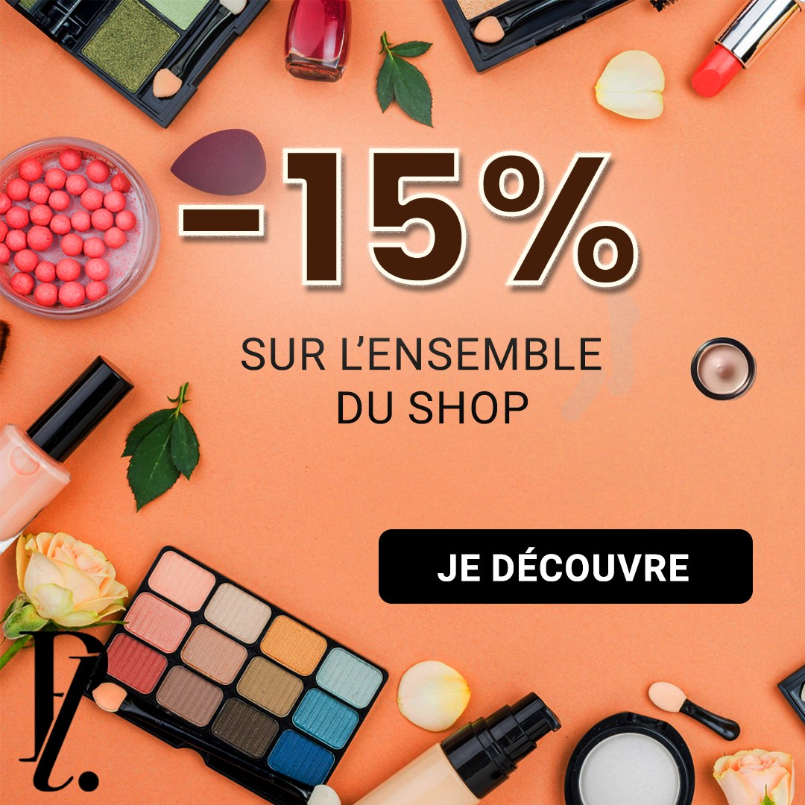
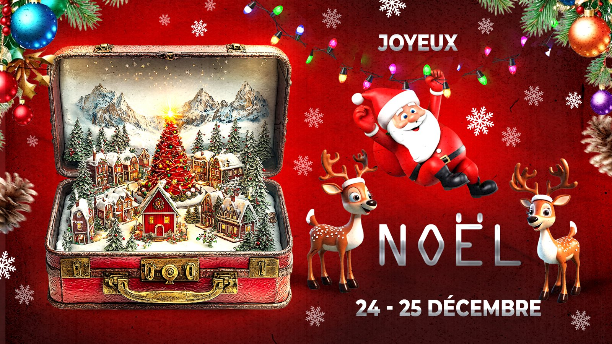
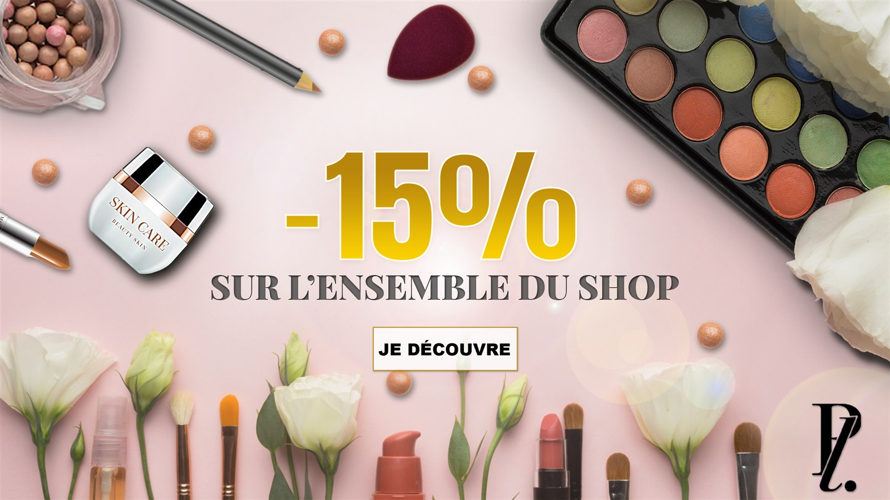

Projet académique
Adobe Photoshop for Business
Création graphique, retouche photo et communication visuelle · 2024
Trois exercices réalisés dans le cadre du cours DIB (EMLV) avec Adobe Photoshop : retouche et correction d’image, création de visuels social media multi-formats, et composition graphique libre.